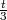
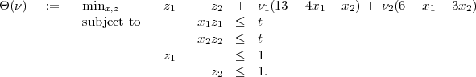
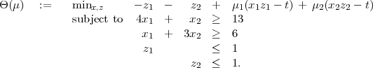
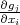

Take Home Due: Beginning of class, Friday, 31 October
2014.
This is to be all your own work. You may use any result from class, homeworks, or the books on
reserve in the library. You may also use anything that is linked directly from the course webpage. I will
have office hours on Tuesdays from 2-5pm and Wednesdays from 11am-1pm. Do not consult
anybody or anything else. The exam consists of five questions and is worth a total of 100
points.
- (25 points; each part is worth 5 points)
This question looks at the nonlinear program
where t is a parameter satisfying 0 < t < 1.
- Show that = (3,1), = (,t) is an extreme point of the feasible region.
- Find a direction d = (dx,dz) that is both a feasible direction and a direction of descent
from (, ).
- Let xa = (t,13 - 4t) and xb = (6 - 3t,t). Find vectors za and zb so that (xa,za) and
(xb,zb) are both KKT points for the problem.
- Show that (xa,za) and (xb,zb) satisfy the KKT second order sufficient condition.
- Find another KKT point satisfying 4x1 + x2 = 13.
- (10 points; each part is worth 5 points)
In this question, we examine two dual problems to (1).
- Let

Show that the optimal dual value sup{Θ(ν) : ν ≥ 0} is equal to -2.
- Let

Show that the optimal dual value sup{Θ(μ) : μ ≥ 0} is equal to -2.
- (15 points) Use AMPL to solve problem (1) for t=0.3,0.2,0.1, and with three different solvers (so
make nine runs altogether). Make sure you reset before each run.
- (25 points) Consider the problem
where t is a positive parameter, A IRm×n with Aij > 0 for all i and j, and b IRm. Assume the
point xi = t ∀i is not feasible.
- (5 points) Let be feasible in (2) with A > b. Show there exists a feasible point ≤
which is feasible in (2) with smaller objective function value than .
- (10 points) Prove that there is a globally optimal solution to (2) that is a KKT point.
- (10 points) Let be a feasible point for (2) that is not an extreme point of the feasible
region. Show that does not satisfy the second order necessary KKT conditions.
- (25 points)
- (10 points) Let g : IR+ → IR be a strictly increasing nonnegative smooth convex function
on the set of positive real numbers. Is xg(x) a convex function of x > 0? Prove or give
a counterexample.
- (15 points) Let gj : IR+n → IR be a nonnegative smooth convex function of strictly
positive x IRn, for j = 1,…,n. Assume also that gj(x) is strictly increasing in
each component of x, so  > 0 for each i and j and for each x > 0. Let f(x) =
∑
j=1nxjgj(x). Is f(x) a convex function of x > 0? Prove or give a counterexample.